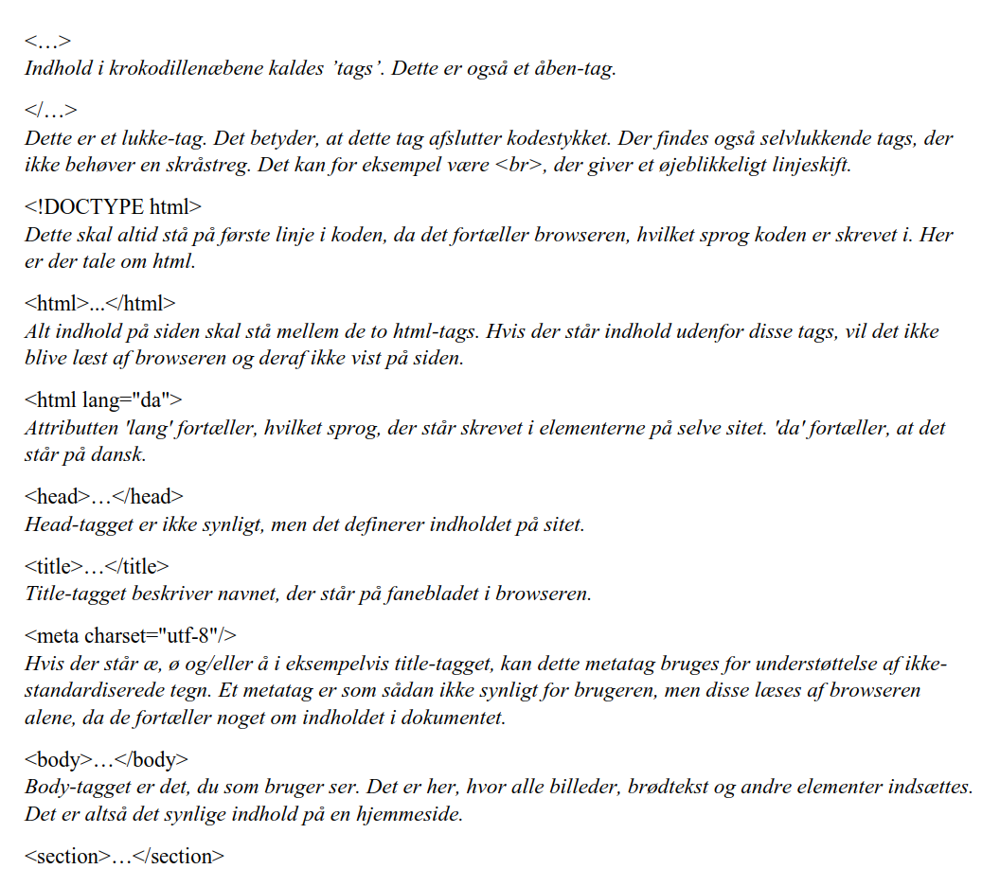

Om HTML
Denne side indeholder en lille forklaring af HTML.
Nogle af forklaringerne på denne sidefindes også i koden
til denne side, forsiden og semantiske tags.
Bemærk: Da jeg ikke kan finde frem til tags,
der lader mig vise "krokodillenæb" på selve hjemmesiden her,
vil disse være indsat som billeder.
Jeg kunne have valgt at benytte xmp-tagget, men det bruges ikke
mere, og derfor har jeg valgt ikke at benytte det.
Hvad er HTML?
HTML står for HyperText Markup Language, og det er et sprog til
at skrive online content i. Det bruges til opsætning af hjemmesider,
men dets brug er ganske begrænset i forbindelse med styling. Hertil
kan der eksempelvis benyttes CSS.
HTML har ændret sig gennem årene, og der eksisterer derfor flere
versioner af det. Det betyder, at en stor del af tidligere benyttede tags
ikke kan bruges i dag, da det er forældede eller skiftet ud med nogle
nye, der bedre definerer indholdet i tagget.
Når koden skal skrives
Principielt kan html skrives i Ms Word, men det er ikke en god løsning.
Gøres dette vil der automatisk medfølge en masse data om formateringen,
og det fylder ganske meget. Derfor er det en god idé at skrive sin kode i
en editor - eksempelvis Brackets. Det giver ren tekst i dokumentet
uden ekstra fyld i form af unødvendig formatering.
Dokumentets opbygning kan se sådan ud:

Forskellige tags
HTML kan indeholde mange forskellige tags. Her kan du læse lidt om nogle de tags,
som jeg har brugt til min hjemmeside.

Dette tag inddeler dokumentet i sektioner. For en brødtekst kan det
eksempelvis betyde, at det formateres anderledes end den øvrige tekst. Dette er også et eksempel
på et semantisk tag. Du kan læse mere om semantiske tags ved at klikke her.